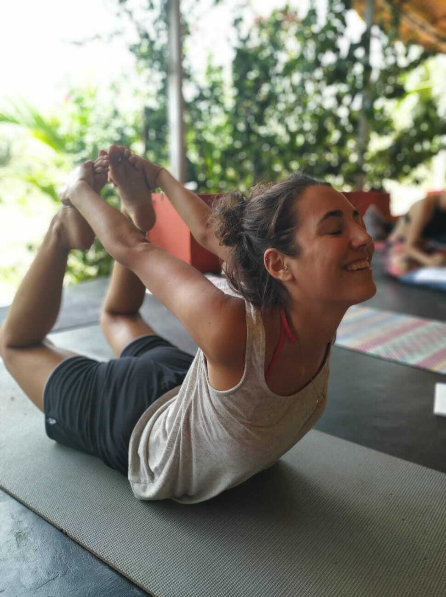
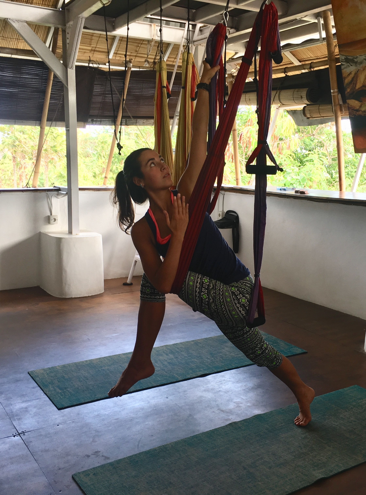
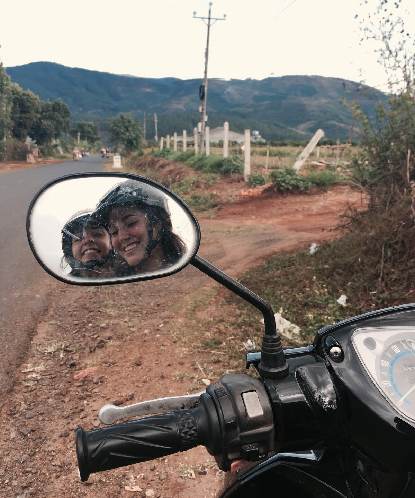
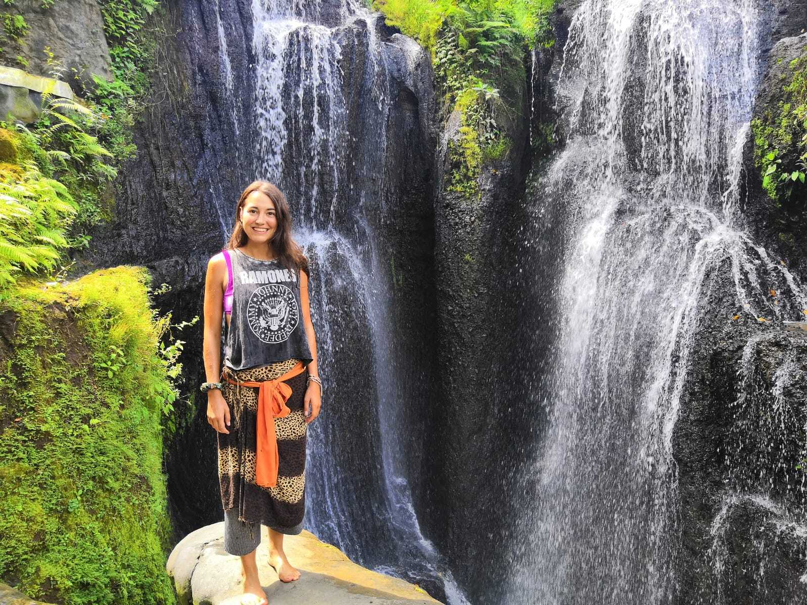
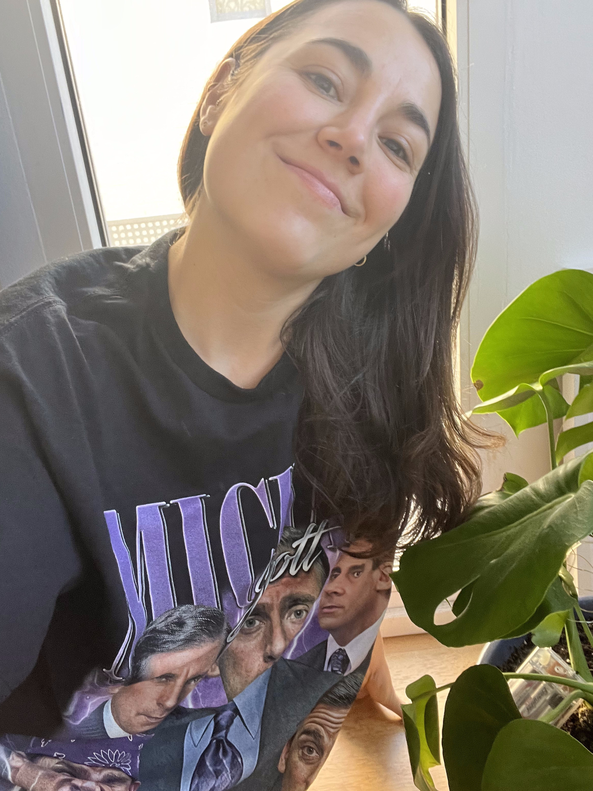

Off the clock
The "work persona" is dead. Long live the whole human.
700-hour certified yoga & pilates instructor. Whether on a mat or in a meeting, I stay cool as a cucumber when everything's on fire.
I've worked in six countries, dabbled in everything from amateur astrology to the psychology of persuasion to beer yoga to imitating accents (terribly). Curiosity isn't a trait — it's my lifestyle.
I bring the stupidiness of The Office and the camaraderie of Friends to my team. Life's too short for boring Zoom calls or weak-ass marketing campaigns.







